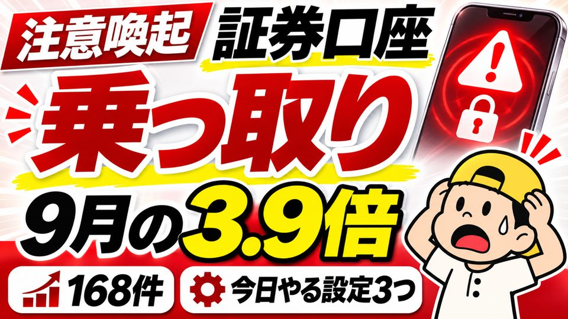
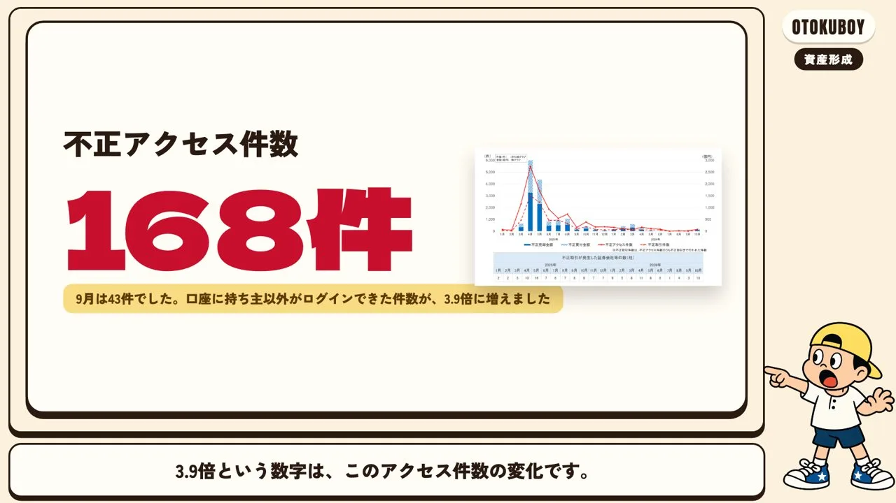
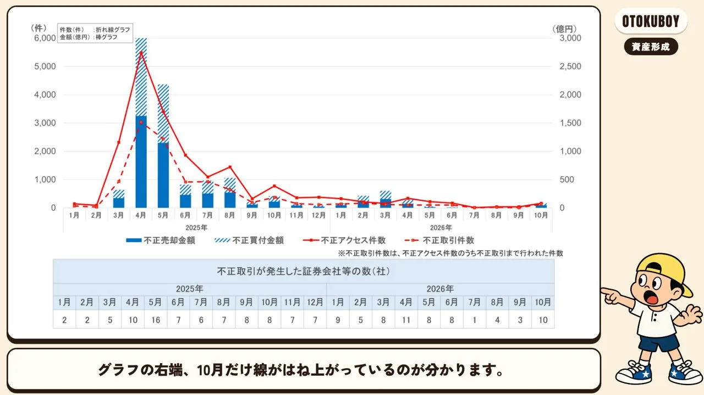
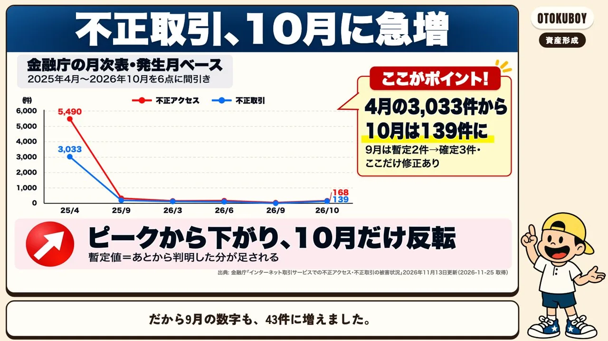
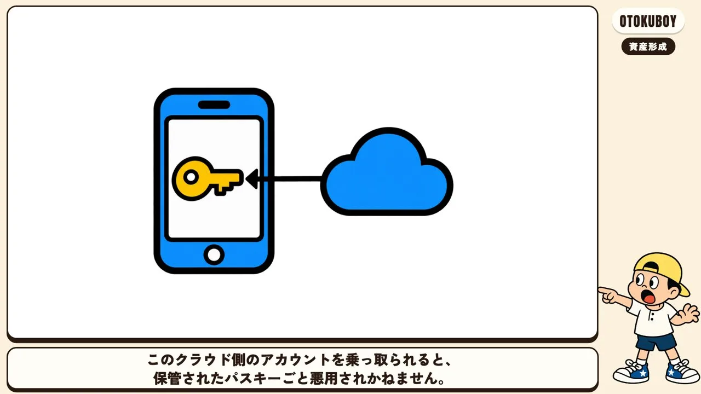
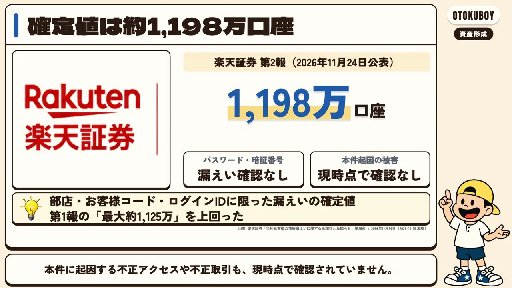
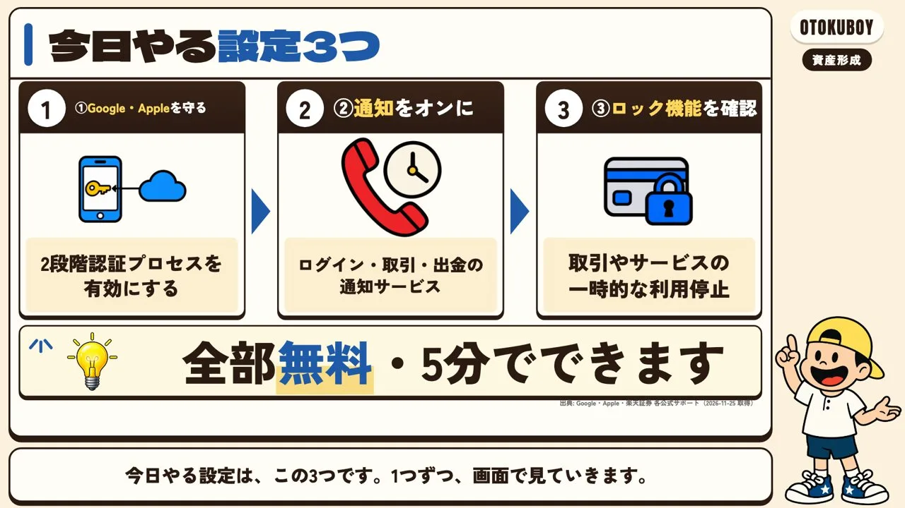
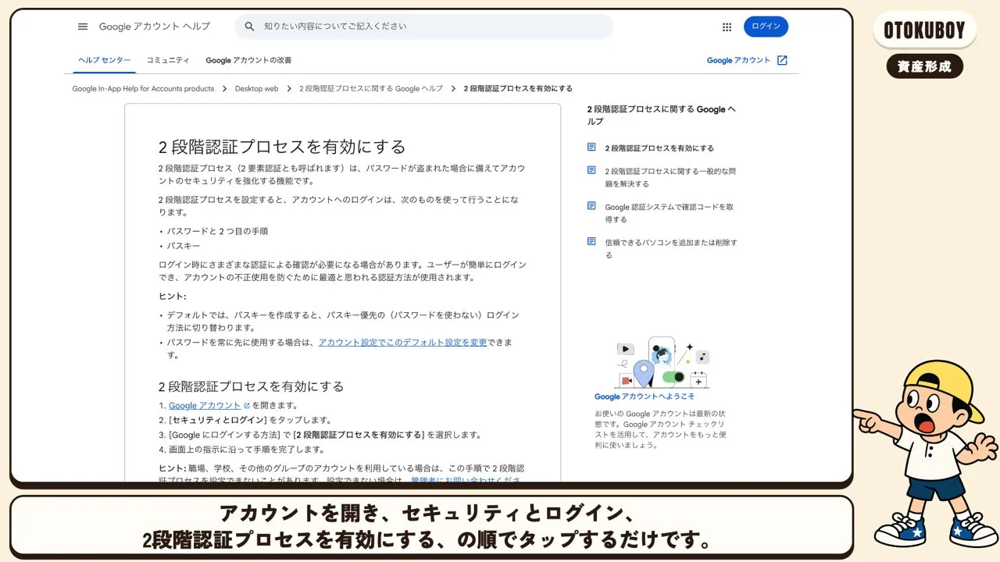
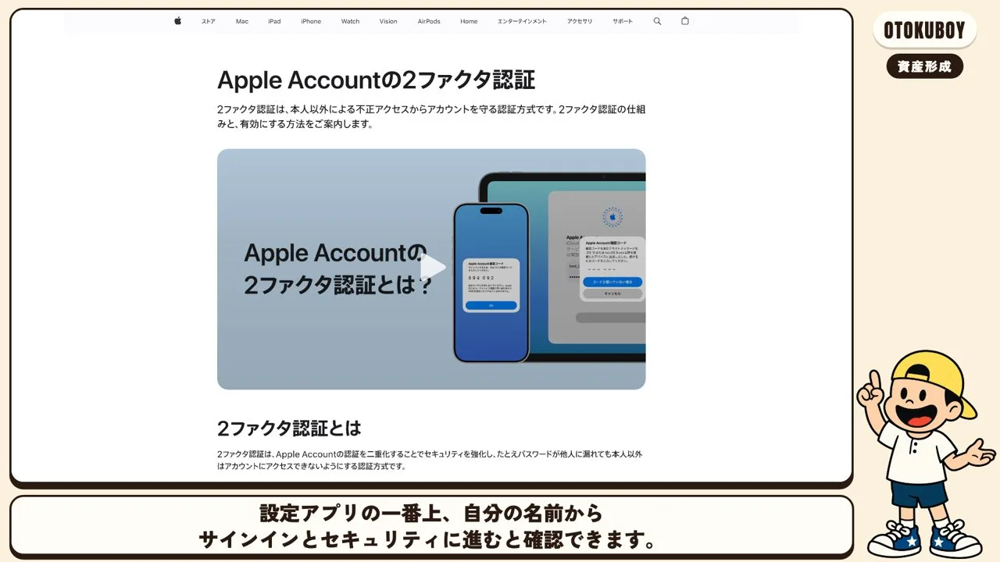
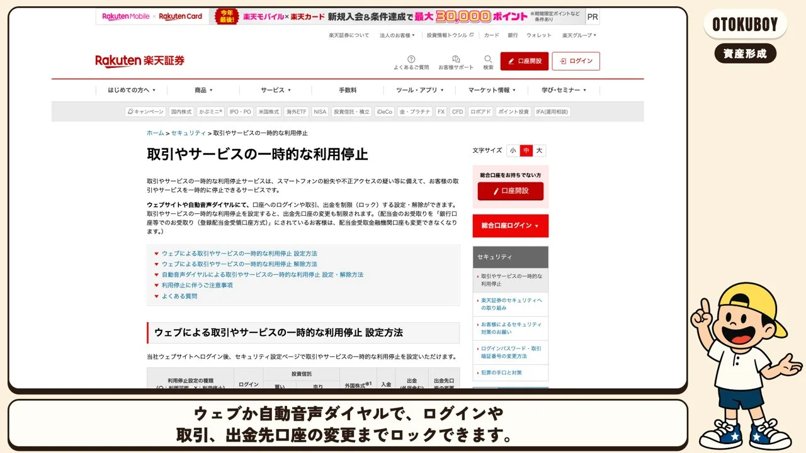

証券口座の乗っ取り、つまり不正アクセスは、2026年10月に168件発生しました。金融庁が11月13日に公表した数字で、9月の43件から3.9倍に増えています。不正取引は3件から139件、不正売買金額は約2億円から約80億円に拡大し、不正取引が起きた証券会社も3社から10社に広がりました。この記事では、金融庁の公表内容と、楽天証券の情報漏えいの最新状況、証券口座を守るために今日やっておきたい対策3つを、公式サポートの手順に沿って解説します。

▶ この記事の内容を動画で見る（お金の総合チャンネル）0110月の不正アクセスは168件、9月の3.9倍（金融庁11月13日公表）
金融庁「インターネット取引サービスへの不正アクセス・不正取引にご注意ください」は2026年11月13日に更新され、2026年10月分の数字が公表されました。
| 指標 | 9月（確定値） | 10月 |
|---|---|---|
| 不正アクセス件数 | 43件 | 168件 |
| 不正取引件数 | 3件 | 139件 |
| 不正売買金額 | 約2億円 | 約80億円 |
| 不正取引が発生した証券会社数 | 3社 | 10社 |
「不正アクセス」は口座の持ち主以外がログインできた件数、「不正取引」はそのうち実際に株が売買された件数で、別の数字です。 3.9倍は不正アクセス件数の変化を指し、被害額は売却と買付を合わせた不正売買の合計金額です。


2025年4月のピーク（不正アクセス5,490件・不正取引3,033件）から下がり続けていた数字が、2026年10月だけ反転しました。

注意金融庁が毎月公表する数字は、発生した月を基準にした「暫定値」です。証券会社からの届け出があとから増えるため、同じ月の数字でも翌月以降の公表で増えることがあります。実際、2026年10月9日の公表時点では9月の値は不正アクセス37件・不正取引2件でしたが、11月13日の公表では43件・3件に上方修正されています。
02新しい手口はパスキーではなく、Google・Appleアカウントの乗っ取り
今回の不正アクセスでは、パスキー（指紋や顔認証でログインできる、パスワード不要の仕組み）や、多要素認証そのものが破られた形跡はないと見られています。ITジャーナリスト山口健太氏は2026年11月14日公開の分析記事で、疑われているのは、パスキーを保管しているGoogle・Appleアカウント自体が乗っ取られるケースだと指摘しています。これは氏個人の分析であり、金融庁による公式な原因発表ではありません。
証券会社のパスキーは、スマホのクラウド（iCloudキーチェーンやGoogleパスワードマネージャー）に保管されており、乗っ取られるとパスキーごと悪用されかねません。

山口氏はもう1つ、ログイン中に偽の確認コード入力を促し、2段階認証の最中に割り込んで突破する「リアルタイムフィッシング」という手口も挙げています。Googleの公式ヘルプも「指紋認証や顔認証に使用される生体認証データはデバイスに保存されており、Googleと共有されることはありません」としています。この入口の問題は証券会社に限らず、決済サービスのPayPayも2026年11月19日、外部アカウントの乗っ取り経由の不正利用に注意を呼びかけています。
03楽天証券の情報漏えい、第2報で確定値に更新
楽天証券は2026年11月17日、「第三者による不正アクセスを受け、情報の一部が漏えいしたおそれがある」と第1報を公表しました。その後2026年11月24日に公表された第2報で、部店コード・お客様コード・ログインIDに限った漏えいは、確定値で約1,198万口座に更新されました。第1報の「最大約1,125万口座」を上回る数字です。

| 項目 | 件数 |
|---|---|
| 個人情報（氏名・住所・電話番号など） | 約441万件（うち口座保有者約322万口座・口座未開設者約119万件） |
| 実際の資産残高情報 | 約168万件 |
| 自己申告の資産情報 | 約271万件 |
| 自己申告の年収情報 | 約1.4万件 |
約441万件のうち約119万件は、口座を持っていない人、つまり退会済みや申込途中でやめた人の情報です。「今は使っていないから関係ない」とは言えません。第2報では新たに、性別・国籍、FAX番号、入金先口座情報、口座開設・受付・解約状況、口座登録アンケート情報など7項目の漏えいも確認されました。
ポイントログインに必要なパスワードや暗証番号の漏えいは、第1報・第2報とも確認されていません。本件に起因する不正アクセスや不正取引も、現時点で確認されていないとされています。
同じ11月13日、マネックス証券も外部委託の口座開設システム（取引用とは別系統）から、メールなど一部の情報が漏えいしたおそれがあると公表しました。一方でSBI証券は10月8日、Google・Appleパスキー乗っ取りは他社事案で、現時点で自社の被害は確認されていないと説明しています。状況は証券会社ごとに違います。
04証券口座を守る今日やる対策3つ
金融庁のページには対策が5つ並んでいますが、まず今日済ませておきたいのは次の3つです。すべて無料で、公式サポートの手順どおりに進めれば5分ほどで終わります。

- Googleアカウントの「2段階認証プロセス」を有効にする。アカウントを開き、セキュリティとログイン→2段階認証プロセスを有効にする、の順でタップします。

- iPhoneを使っている場合は、Apple Accountの「2ファクタ認証」も確認します。設定アプリの一番上、自分の名前からサインインとセキュリティに進むと確認できます。

- 証券会社の通知サービスと、取引・出金のロック機能を確認する。楽天証券の場合は「取引やサービスの一時的な利用停止」から、ウェブか自動音声ダイヤルで、ログインや取引、出金先口座の変更までロックできます。

楽天証券は、日々ログインする客の9割超が、すでにパスキー認証を使っています。まだ設定していない人は、公式ページから今日中に設定しておくと安心です。
注意取引の暗証番号を、クラウドのメモ機能に保存するのは避けてください。アカウントごと乗っ取られたとき、一緒に抜かれてしまいます。
ちょうど年末は、新NISAの年内枠を使い切る手順で証券口座に入金する人も多い時期です。同じ口座を使うからこそ、今日の3つの対策もあわせて済ませておくと安心です。
05よくある質問
投資者保護基金で補償されますか？
対象外です。投資者保護基金は証券会社の経営破綻に備える制度で、情報漏えいや不正取引そのものは補償しません。銀行預金を対象にした預金保険とも仕組みが異なり、保護範囲は預金保険は銀行ごとに上限があるで解説しています。
楽天証券をやめるべきですか？
今日お伝えした3つの対策は、どの証券会社を使っていても同じように効きます。楽天証券のパスキー導入率（9割超）は他社と比べても高い水準で、乗り換えよりまず自分の設定を見直すことが先です。
今から設定しても意味はありますか？
十分間に合います。狙われているのはログインに使うクラウド側のアカウント情報なので、今日設定すればこれから先の入口を塞げます。
9月の数字はなぜ変わったのですか？
金融庁が毎月出す数字は、証券会社から届いた分だけをその月の発生として数える暫定値です。あとから判明した分が足されるため、同じ9月の数字でも、10月9日公表時点の37件・2件から、11月13日公表では43件・3件に修正されました。
06まとめ
結論10月の不正アクセスは168件で9月の3.9倍、不正取引・被害額・証券会社数のいずれも増えています。今日のうちに、Google・Appleアカウントの2段階認証、証券会社の通知サービス、取引・出金のロック機能の3つを確認しておきましょう。
- 金融庁公表（2026年11月13日時点）: 不正アクセス168件・不正取引139件・不正売買金額約80億円
- 楽天証券の情報漏えいは第2報（2026年11月24日公表）で確定値約1,198万口座に更新
- 今日やる対策①Google・Appleアカウントの2段階認証 ②証券会社の通知サービス ③取引・出金のロック機能
この記事は特定の金融商品の購入・売却をすすめるものではありません。数字と手順は2026年11月25日時点で確認できた公式の公表によるものです。最新の状況は、各社の公式ページで確認してください。
出典
- 金融庁「インターネット取引サービスへの不正アクセス・不正取引にご注意ください」（2026年11月13日更新）
- 時事通信「証券口座への不正アクセス増加 10月は168件、前月の3.9倍 金融庁」
- 株探「【口座乗っ取り】10月不正売買額は80億円 2カ月ぶり対前月増」
- 山口健太（ITジャーナリスト）「証券口座での不正取引が10月に再び増加 どういう手法なのか」
- 楽天証券「当社お客様の情報漏えいの可能性に関するお詫びとお知らせ」（2026年11月17日）
- 楽天証券「当社お客様の情報漏えいに関するお詫びとお知らせ（第2報）」（2026年11月24日）
- 楽天証券「取引やサービスの一時的な利用停止」
- Google アカウント ヘルプ「2段階認証プロセスを有効にする」
- Apple サポート「Apple ID の2ファクタ認証」
- 日本投資者保護基金 Q&A